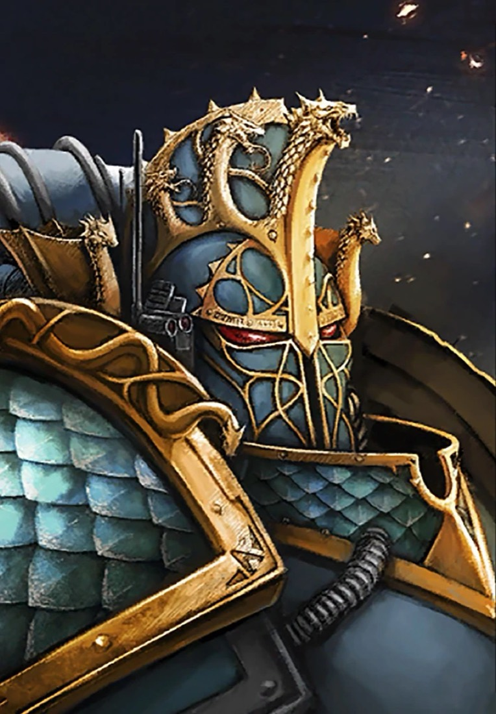

Alpharius Omegon
| Alpharius Omegon | |
|---|---|
| The Hydra, the Aleph Null, the Threefold Serpent, the Final Configuration, the Last Primarch | |
 The primarch of the Alpha Legion with two of his warriors, from a plate preserved in the Ordo Hereticus archive | |
| Primarch of the Alpha Legion | |
| Tenure | 981.M30 – c. 010.M31, the Battle of Pluto (Alpharius); Omegon thereafter, unrecorded |
| Also known as | Alpharius; Omegon; the Hydra |
| Allegiance | Imperium of Mankind (publicly until 005.M31); the Traitor Legions; interests of the Legion's own |
| Legion | |
| Homeworld | Unrecorded; contradictory accounts, all unconfirmed |
| Created | Terra, c. 792.M30, in the gene-laboratories of the Emperor of Mankind |
| Discovered | 981.M30; circumstances disputed |
| Status | Alpharius killed at the Battle of Pluto, c. 010.M31, in the Solar War that opened the Siege of Terra (accepted account). Omegon assumed the name and the command; his fate is not recorded. Older records of Alpharius's death at Eskrador are disputed |
| Gene-father | The Emperor of Mankind |
| Twin | Alpharius and Omegon, one pair of brothers sharing a single name and a single appearance |
| Brothers | The other primarchs; known in the records to have kept company with Horus alone |
| Rivals | Roboute Guilliman, Leman Russ, Rogal Dorn |
| Wargear | The Pythian Scales; the Pale Spear (Sarrisanata); a master-crafted plasma blaster; venom spheres |
| Known for | The Deliverance Uprising; the Chondax blockade; the Alaxxes Nebula; the Investiary raid on Terra; the Battle of Pluto |
Alpharius Omegon, called the Hydra and the Aleph Null, was the primarch of the XX Legion of the Space Marine Legions, the Alpha Legion. Of all the twenty primarchs he is the least certainly known. Imperial scholars now accept that the primarch was not one man but a pair of identical twin brothers, Alpharius and Omegon, who shared a single identity and a single command. For the whole of the Great Crusade and most of the Heresy their existence was a secret held only by the Legion itself, and neither the Emperor's court nor the other primarchs knew it.[1][2]
The Alpha Legion's reputation was built on subversion, infiltration and misdirection. It took its symbol from the hydra of Terran myth and fought, like the beast, with attacks from several quarters at once. Its primarchs, who might fight as one of their own legionaries, in the semblance of another primarch's warrior or as a primarch in baroque scale-armour, ensured that an enemy often did not know it was fighting the Alpha Legion until the battle was lost.[3]
In 005.M31 the Legion joined Horus in rebellion. The reasons for that choice are among the most disputed questions of the Heresy; the sealed account of the Cabal, discussed below, suggests that the Legion's rebellion was a loyal act. In the Siege of Terra, Alpharius was killed in a duel with Rogal Dorn at the Battle of Pluto, and Omegon took his brother's name for the rest of the war. The Alpha Legion did not retreat into the Eye of Terror after the Heresy; it spread through the galaxy in small, autonomous warbands, and the High Lords of Terra have declared it destroyed at least three times, in the 31st, the 32nd and the 39th millennia.[2][4]
Origins
[edit]The question of the twins
[edit]The Imperium's archives preserve several accounts of how the twentieth primarch was found. None is verified, and several are plainly manufactured by the Legion itself. The most widely repeated holds that Alpharius was the leader of a confederation of human systems whose fleet inflicted a defeat on a battleship of the Luna Wolves by trickery and ambush. Horus led a pursuit and, on the flagship Vengeful Spirit, a lone intruder cut his way through the Justaerin and reached the Warmaster's command chamber, where Horus recognised him as a brother.[3]
A second account, extracted from a captured Alpha Legion centurion, tells of an unnamed dead world at the edge of the Mandragoran Stars, where the infant primarch survived alone in the ruins of a murdered alien city until a corsair ship landed; he killed its crew and took its vessel to search for his father. A third, from the suppressed text called the Codex Hydra, places him on the world of Bar'Savor, where he was taken by the Slaugth, enslaved and taught to sow discord on the worlds they meant to feed on, and was freed by the Emperor himself. The same text offers a still stranger version, in which Alpharius was never scattered at all but raised secretly on Terra by the Emperor as his own agent. Archivists of the Ordo Hereticus conclude that none of the accounts is reliable, and that all are, in the manner of the Legion, a screen.[2]
The Emperor and the Legion
[edit]The records of Terra suggest that Alpharius, found in 981.M30, spent little time with the Emperor after his discovery. He was sent to take command of his Legion, and the Emperor, at that point deep in the affairs of the Great Crusade, is not known to have spoken of him afterwards. The Emperor is held to have known the secret of the twin primarchs, though whether the twin birth was intended or an accident of the Primarch Project is not recorded. The two were said to share a single soul, Omegon acting as second to Alpharius in the Legion's command.[1]
The Great Crusade
[edit]The XX Legion's service in the Great Crusade was short compared with that of the First Founding Legions and was conducted in conditions of the greatest secrecy. The warriors were taller than most, recalled the primarch's appearance, and fought as a disciplined, closely co-ordinated force. They kept apart from the other Legions, even when fighting alongside them, and cultivated a reputation for obliquity.[3]
In war the Alpha Legion combined heavy force with sabotage, ambush, stealth and assassination. It studied the strengths and weaknesses of its fellow Legions and borrowed their tactics. It also gained notoriety for the needless intricacy of its methods. On Tesstra Prime, a world whose capital could have been taken at once, the Legion allowed the defenders to dig in so that they could be dismantled by sabotage, ambush and random misfortune, and the garrison surrendered after suffering ninety per cent casualties. Asked why, Alpharius is reported to have said that the simple course "would have been too easy". Guilliman called the operation a waste of the Emperor's ordnance. Only Horus admired it.[5]
The Legion's relations with its brothers deteriorated. The Alpha Legion's refusal to take orders from other Legions' commanders led to quarrels with Guilliman and Mortarion after the Ullanor Crusade, and with Leman Russ, whose distaste for trickery was well known. The rest of the Legions regarded it with distrust.[5]
The Horus Heresy
[edit]Why the Alpha Legion rebelled
[edit]The common explanation, that the Alpha Legion joined its only friend among the primarchs, Horus, is not the only one. The scheme at Isstvan V, in which Horus destroyed three Legions in a single ambush, resembled operations that Alpharius had planned in the past. An older Inquisitorial account suggests that a second motive may lie in the Legion's private history. About two years before the Heresy, during the compliance of Nurth, Alpharius Omegon is said to have been approached by an alliance of xenos led by the Aeldari, called the Cabal, and by a human agent, the Perpetual John Grammaticus. They showed him two visions of the future. In the first the Alpha Legion remained loyal, the Emperor won and was entombed in the Golden Throne, and humanity declined for ten thousand years until Chaos returned to destroy it. In the second the Legion joined Horus, and Horus, once he had slain the Emperor, would repent and destroy a corrupted humanity in a single century of slaughter, and the Powers of Chaos would perish with the race that fed them.[2]
The Legion, according to this account, chose the second, and so joined the Traitors in the belief that it was acting as the Emperor would have chosen. The account is an Inquisitorial reconstruction and has never been confirmed. Its authors concede that the Cabal may have lied, or been mistaken, or been in the service of Chaos, and that the outcome did not match either vision. The Alpha Legion itself has never explained its choice.[2]
The Deliverance Uprising
[edit]After the Drop Site Massacre the Cabal reportedly directed the Alpha Legion to help Horus to a swift victory. The remnant of the Raven Guard returned to Deliverance, where Corvus Corax was trying to rebuild his Legion with a sample of undifferentiated primarch gene-material given him by the Emperor. Alpha Legion operatives, surgically disguised as Raven Guard dead of Isstvan V, entered the Legion and waited until a breakthrough was made. They then contaminated the pure material, so that newly inducted aspirants mutated into monsters, and fomented a rebellion among the tech-guilds of the forge world of Kiavahr. The Raven Guard crushed the rebellion and killed every Alpha Legion agent, but the damage was done. Alpharius gave the corrupted research to Fabius of the Emperor's Children, who found it useless; the Alpha Legion kept the integral data and a copy of the contaminated genome for its own use. Omegon, who met the Cabal's representative afterwards, informed him that the Legion would henceforth act without direction.[2]
Chondax and the Alaxxes Nebula
[edit]
Horus sent the Alpha Legion to blockade the White Scars in the Chondax System, where they fought until 007.M31, so that they would not learn of the rebellion or join the loyalists on Terra. The Legion's actual conduct there was ambiguous. Omegon authorised the destruction of an Alpha Legion outpost that was using alien pylons to jam astropathic messages, an act that allowed word of the Heresy and Dorn's order to reach Jaghatai Khan. The Alpha Legion fleet then appeared to menace the White Scars, but allowed them to break out. Mortarion raised with Horus the suspicion that the Legion was undermining the Traitors' plans, and Horus did not respond.[2]
In 007.M31 Alpharius attacked the Space Wolves in the Alaxxes Nebula, where Leman Russ was recovering from the war on Prospero. The Legion had old grudges against the Wolves, and relished the chance to prove its method superior to Russ's open warfare. Teleporting Lernaean Terminators onto Russ's flagship, the Hrafnkel, it came near to victory, but a Dark Angels fleet arrived and the Alpha Legion fell back.[2]
The Shattered Legions
[edit]In the Heresy's years of attrition the Alpha Legion also hunted its own loyalists. Testimony from the survivors of a Shattered Legions vessel, the Sisypheum, places one of the primarchs, presumed to be Alpharius, in a secret facility designated Lerna 2-12, disguised as the Iron Hands commander Shadrak Meduson. His disguise was discovered only at the end of the affair, after the survivors had escaped.[2]
Terra and Pluto
[edit]As the Solar defences took shape under Rogal Dorn, the Alpha Legion activated agents that had been placed in the Sol System decades earlier. They penetrated the Imperial Palace, entered the Investiary, where statues of the twenty primarchs stood, and destroyed all except two, those of Alpharius and Dorn, and left a message for the Imperial Fists. Dorn kept the affair secret, even from the Custodes and Malcador. A fleet under the Harrowmaster Kel Silonius then took several of the moons of Pluto.[2]
At the Battle of Pluto, in about 010.M31, Alpharius himself brought a fleet of over two hundred ships into the Sol System unobserved by placing it and its crews into stasis for a year of drifting, while his agents carried out terrorist attacks across the system to draw the defenders' attention. His objective was Hydra, a fortress moon that served as the Solar System's main astropathic monitoring station. Sigismund of the Imperial Fists defended with thirty ships. When Dorn's flagship, the Phalanx, arrived with a fleet, the Alpha Legion's attack stalled, and Dorn and his Huscarls teleported into the astropathic chamber, where Alpharius and his Lernaean Terminators were waiting. The two primarchs fought. When Alpharius was about to drive the Pale Spear through Dorn, Dorn took the blow in his shoulder to pin Alpharius, severed his wrists, and killed him with his chainsword.[2][6]
The Alpha Legion fleet then withdrew. At the moment of his twin's death Omegon is said to have felt it. When Horus later demanded to speak to Alpharius, Omegon took his brother's name, as he had done many times before, and was from that moment the sole primarch of the Legion. The Alpha Legion did not go to Terra, but spent the rest of the war in delaying actions, defeating a White Scars force on Tallarn and a Space Wolves force on Yarant.[6]
After the Heresy
[edit]Eskrador
[edit]An older tradition, preserved in the records of the Ultramarines, places the death of Alpharius after the Heresy, on the world of Eskrador, where Guilliman led a strike force against the Alpha Legion's headquarters. According to this account the two primarchs fought, and Alpharius was killed, but the Alpha Legion counterattacked a day later and nearly destroyed the Ultramarines' strike force. The Ultramarines themselves have long suspected that the death was staged, and the account of Pluto, supported by the records of the Imperial Fists, is now accepted. The Eskrador tradition is held by Imperial historians to be either a record of a later engagement in which Omegon, in his brother's name, was the one who fell or was feigned to fall, or a fabrication by the Alpha Legion. Which of these is correct is not recorded.[4][7]
The Legion at large
[edit]The Alpha Legion divided into autonomous warbands and spread across the galaxy, hidden in asteroid fields, space hulks and uninhabited worlds. It raises Chaos cults on Imperial worlds, uses uprisings to draw Imperial forces away from its real targets, and has, to the knowledge of the Inquisition, largely escaped the mutation that afflicts other Traitor Legions. This has led some Inquisitors to suspect a continued, hidden loyalty to the Emperor. The Ordo Malleus and Ordo Hereticus have devoted heavy resources to finding its bases. In the Era Indomitus, the Imperium cannot say whether a primarch of the Legion yet lives.[4][7]
Character and appearance
[edit]Contemporary accounts describe Alpharius as a masterful tactician whom the Imperial Stratagos rated alongside Perturabo and Guilliman. His intellect was said to be cool and watchful, like a viper's gaze. He sought the company of none of his brothers save Horus, though there are reliable reports that place a primarch of the Legion on Caliban and on Terra at various times. He encouraged his commanders to act with extreme independence, and yet the Legion took pride in its unity of purpose. The contradiction was part of the design.[1]
Records of his appearance contradict one another. In some he is of the build and face of a common legionary and passes unnoticed in their ranks; in others he is a towering figure in ornate armour with a double-bladed spear, with a likeness, in the cast of his features, to both Horus and the Emperor. The accepted explanation is that the two brothers, who were identical, used the difference deliberately.[1]
Wargear
[edit]- The Pythian Scales: baroque, reptilian Artificer armour, faceless and fashioned after the manner of an ancient Terran myth. It turned aside blade, energy and alchemical attack.
- The Pale Spear (Sarrisanata): a double-bladed spear that flickers out of phase with the material world and emits a howling sound when wielded. It pierces any physical defence, and leaves in living matter a bloodless wound, the flesh turning to oily smoke. It is held to be a xenos artefact older than the rise of the Aeldari.
- A master-crafted plasma blaster.
- Venom spheres: grenades employed only by the Alpha Legion, loaded with toxin-impregnated crystalline splinters.
Legacy
[edit]
Alpharius and Omegon are the only primarchs about whom the Imperium cannot be sure of the basic facts, and the Alpha Legion's custom of answering "I am Alpharius" in answer to an enemy's demand for its commander's name has made that uncertainty a weapon. The Inquisition regards any suspected sighting of the primarch as an event of the first order. The Imperial Fists keep the record of the Battle of Pluto, and the Ultramarines keep that of Eskrador, and the two remain unreconciled.[7]
Timeline
[edit]| Date | Event |
|---|---|
| c. 792.M30 | The twin primarchs are scattered from Terra; every account of where they fell is unconfirmed. |
| 981.M30 | Alpharius, last of the primarchs to be found, takes command of the XX Legion, the Alpha Legion. |
| c. 999.M30 | The Alpha Legion takes 670-25 (Nurth) into compliance. |
| 000.M31 | Contact with the Cabal, according to the sealed account; the Ullanor Crusade ends in the Triumph of Ullanor. |
| 002.M31 | The Legion pursues the Ork remnants of Ullanor into the Kayvas Belt; quarrels with Roboute Guilliman and Mortarion. |
| 005.M31 | The Alpha Legion joins Horus in rebellion. |
| 006.M31 | Fights in the Traitor second wave at the Drop Site Massacre on Isstvan V; provokes the Deliverance Uprising against Corvus Corax. |
| 006–007.M31 | Blockades the White Scars in the Chondax System. |
| 007.M31 | Ambushes the Space Wolves in the Alaxxes Nebula. |
| c. 010.M31 | Alpharius is killed by Rogal Dorn at the Battle of Pluto; Omegon takes his name and command. |
| 013–014.M31 | The Legion hunts loyalist reinforcements bound for Terra during the Siege of Terra. |
| After 014.M31 | The Alpha Legion divides into autonomous warbands. An older Ultramarines tradition places the death of Alpharius at Eskrador in the Great Scouring. |
See also
[edit]Notes
[edit]References
[edit]- ^ a b c d Liber Primarchus (M32, revised M41). Administratum Archive, Terra.
- ^ a b c d e f g h i j k Chronicles of the Heresy (sealed). Logos Historica Verita, Terra.
- ^ a b c Carpinus (c. 010.M31). Speculum Historiale. Remembrancer Order.
- ^ a b c Codex Imperialis (rev. 980.M41). Adeptus Terra.
- ^ a b Oliton, Mersadie (c. 005.M31). Chronicles of the Luna Wolves. Remembrancer Order.
- ^ a b The Siege of Terra: Accounts of the Palace Defenders (M31, revised M32). Imperial Fists Archive, Terra.
- ^ a b c Records of the Indomitus Crusade (ongoing). Office of the Lord Commander.